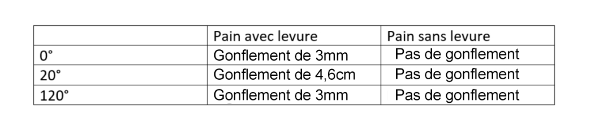

Nos stratégies
I. Le rôle de la levure boulangère dans la transformation alimentaire
Ce que l'on cherche :
Nous avons essayer de déterminer si la levure était nécéssaire pour la trasnformation alimentaire du pain.
Ce que l'on fait :
On teste le rôle de la levure boulangère,
On va mélanger la farine, l'eau et la levure boulangère dans un bécher, ceci sera notre expérience témoin.
On va mélanger la farine et l'eau dans un bécher.
Puis on va observer les résultats.
Ce que on s'attend à trouvé :
On s'attend a ce que le mélange de farine et d'eau ne gonflera pas alors le mélange de farine, d'eau et de levure boulangère gonflera.
Résultat de l'expérience :

Photo de 2 béchers avec de la pâte à pain de l'expérience.
J'observe que la pâte dans le bécher avec la levure mesure d'environ 3,4cm et que la pâte dans le bécher ne contenant pas de levure mesure environ
de 2,6cm au bout d'une heure.
Je sais que la levure est un micro-organisme capable de faire une fermentation alcoolique.
J'en déduis donc que la levure est indispensable pour permettre de faire gonfler la pâte du pain et réaliser une transformation alimentaire.
II. Les conditions de la transformation alimentaire
Ce que l'on cherche :
On cherche a montré que la température est une condition pour que la réaction chimique puisse bien se dérouler.
Ce que l'on fait :
On va refaire deux préparation avec levure donc nous aurons trois préparations avec levure.
On va donc en mettre une préparation à température de 0°C, une à température de 20°C (témoin) et une à température de 120°C (le même nombre de temps)
Ce que on s'attend à trouvé :
On s'attend a avoir une différence entre les trois préparations et que la préparation à température de 20°C va être gonfler comparé aux autres.

Tableaux représentant les résultat de l'expérience en fonction de la température
J'observe que les préparation mis à une température de 0°C et de 120°C n'ont gonflé que de 3mm. Par contre,
la préparation mis à une température de 20°C a gonflé de 4,6cm.
Je sais que la levure est un micro-organisme capable de faire une fermentation alcoolique.
J'en déduis donc que la levure a besoins d'une température de 20°C pour gonfler correctement.
Conclusion
En conclusion, les micro-organismes, tels que la levure boulangère, jouent un rôle essentiel dans la transformation alimentaire, notamment dans le processus de fabrication du pain. Leur capacité à fermenter les sucres présents dans la pâte permet la production de dioxyde de carbone, entraînant le gonflement de la pâte et la formation de la texture aérée du pain. De plus, la levure contribue à développer les arômes caractéristiques du pain lors de la fermentation. Ainsi, l'utilisation judicieuse des micro-organismes dans la transformation du pain illustre parfaitement comment la biotechnologie alimentaire peut être exploitée pour améliorer la qualité, la saveur et la texture des produits alimentaires de manière naturelle et durable. Cette symbiose entre l'homme et les micro-organismes dans le processus de fabrication du pain témoigne de l'ingéniosité humaine dans l'exploitation des ressources biologiques pour répondre à nos besoins alimentaires fondamentaux.